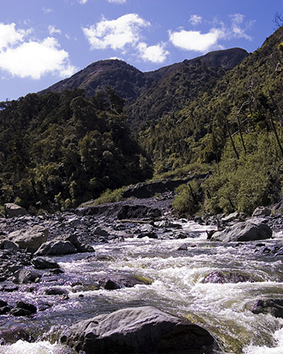
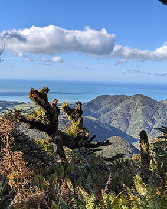
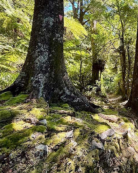
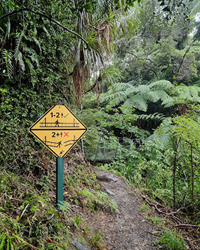

Whakanui Track
The Whakanui Track takes you from Wainuiomata through to the Orongorongo River in the Remutaka Forest Park. It can be walked as a return trip, or connected with the Big Bend Track or Mt McKerrow Track finishing at Catchpool carpark, or with Papatahi Crossing to finish in the Wairarapa.
The track begins from Wainuiomata. It then ascends up to a long flat ridge separating Whakanui Creek from Turere Stream. From there it continues on the true right side of Whakanui Creek to the end of the track.The track passes through lush forest for most of its length. There are beautiful views of the Remutaka Range from the highest parts of the track.
Orongorongo Track
Located in the Catchpool and Ōrongorongo Valleys, the Ōrongorongo Track provides a popular area for camping, hiking, and walking. At 10km, the moderately challenging route takes an average of 2 hours and 45 minutes to complete. Accessed south of Wainuiomata, the track is about 45 minutes from Wellington.
The trail climbs gently through mixed podocarp and broadleaf forest surrounding the Ōrongorongo River. And at the end of the walk, there are swimming holes at Tūrere Stream to cool off. This is a very popular walk, so you’ll likely encounter other people while exploring. Dogs are welcome but must be on a leash.


Five Mile Loop Track

